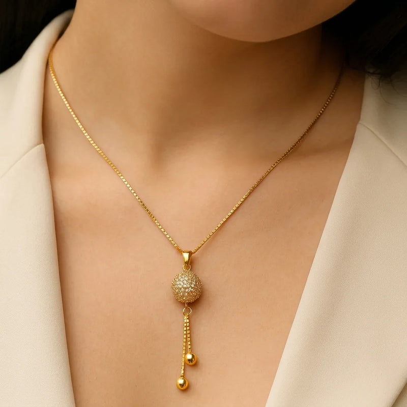
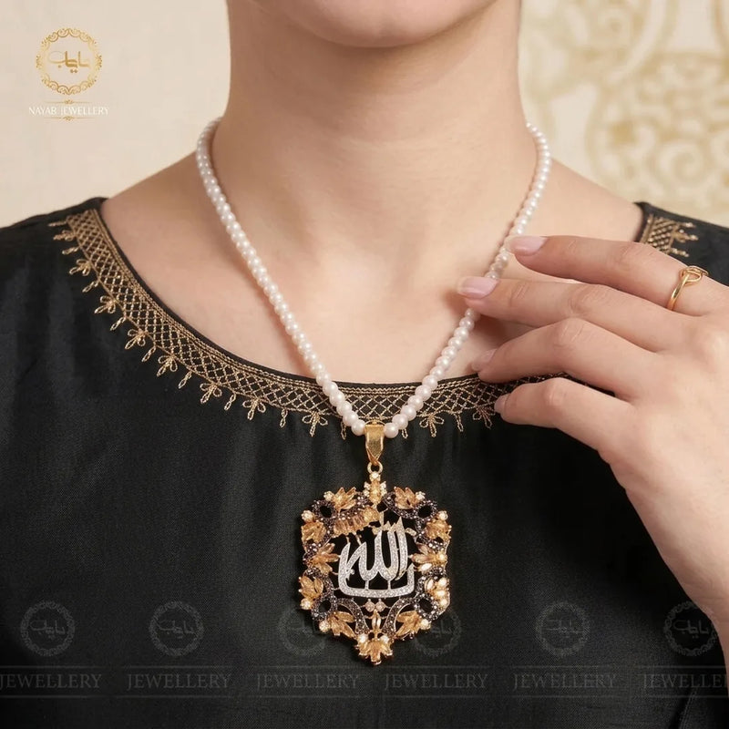
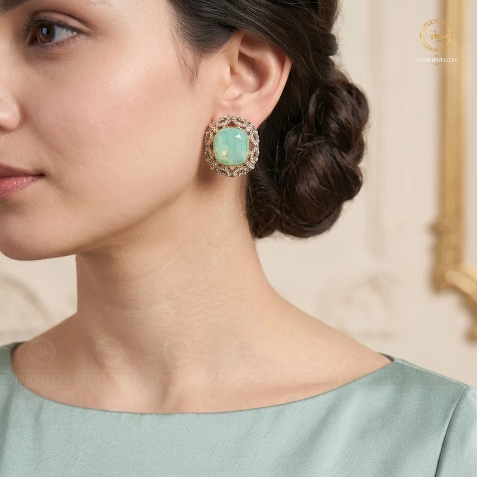
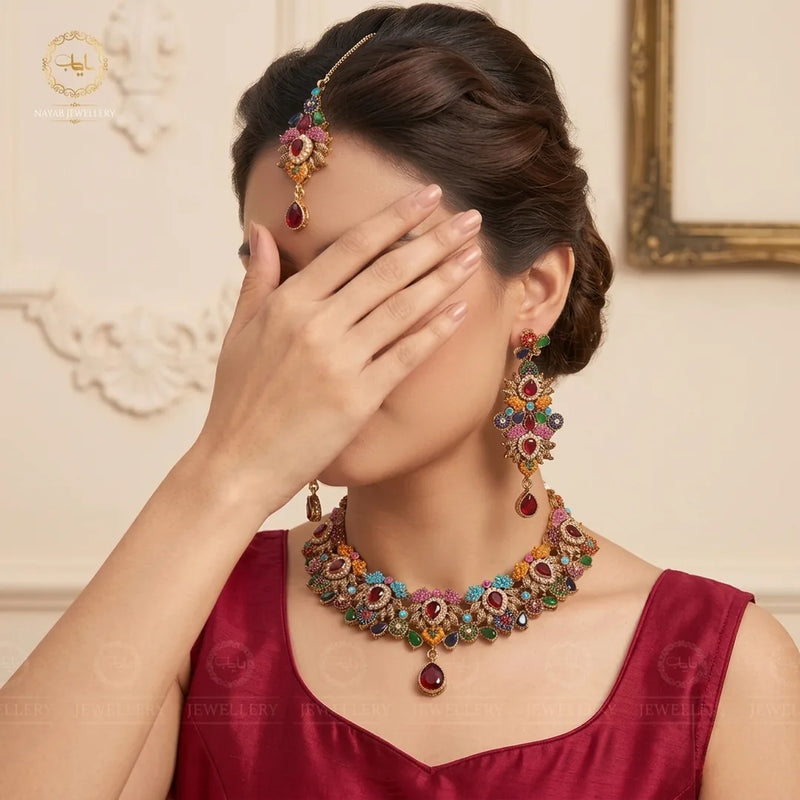
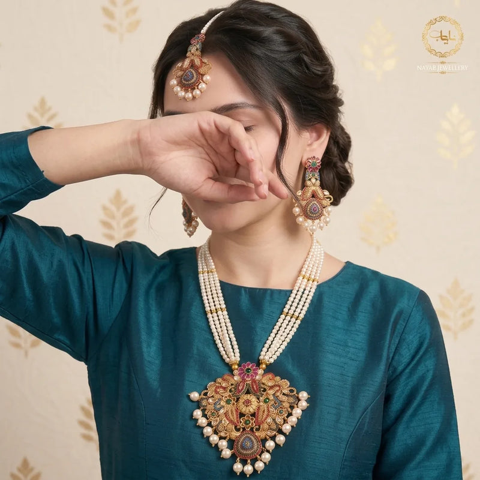
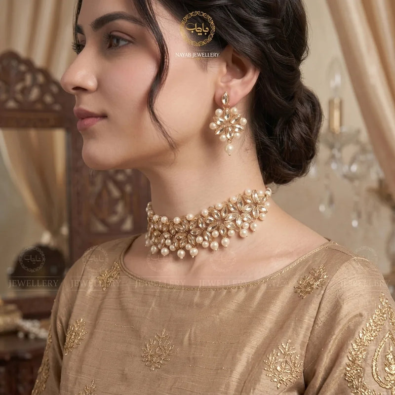

There is something deeply enchanting about wearing a genuine gemstone against your skin. When vibrant mineral crystals meet the cool, luminous sheen of fine silver, the result is wearable poetry. A 925 sterling silver gemstone necklace effortlessly bridges the gap between everyday simplicity and red-carpet sophistication.
Whether you are looking for an everyday signature piece, celebrating a milestone birthday, or searching for a heartfelt gift, silver gemstone necklaces offer beauty that never goes out of style. With natural stones carrying personal stories and authentic silver providing lasting durability, this classic accessory belongs in every jewelry collection. In this comprehensive guide, we will explore what makes sterling silver so special, uncover the deeper meanings behind your favorite stones, and share expert tips to help you style, choose, and care for your forever jewelry.
What Is 925 Sterling Silver and Why Does It Matter?

When shopping for fine jewelry, you will frequently see the hallmark "925" stamped onto chains, bail loops, and clasps. But what does this hallmark actually mean?
Pure silver—often called fine silver (99.9% pure)—is remarkably soft and malleable. If an artisan crafted a delicate necklace chain or bezel setting out of pure silver alone, it would bend, stretch, and scratch with the slightest touch. To give silver the structural strength required for secure daily wear, master silversmiths alloy 92.5% pure silver with 7.5% strengthening copper. This precise historical formulation is what we know as authentic sterling silver.
Here is why 925 silver is the gold standard for jewelry lovers:
- Incredible Longevity: Unlike plated costume metals that flake, rub off, or turn your skin green after a few weeks, solid sterling silver lasts for lifetimes.
- Naturally Hypoallergenic: High-grade 925 silver is nickel-free and lead-free, making it gentle on sensitive skin and safe for all-day comfort.
- Warm, Moonlit Luster: Sterling silver reflects over 90% of visible light, giving it a bright, luminous shine that flatters every skin tone.
- Accessible Luxury: Sterling silver offers all the prestige, weight, and heirloom value of a precious metal at a price that remains accessible.
Purity Key Takeaway
- The "925" hallmark certifies that 925 out of 1000 parts are solid pure silver.
- Alloying with copper creates the tensile strength required to secure precious gemstone settings permanently.
Why Choose a 925 Sterling Silver Gemstone Necklace?

With endless jewelry styles available, what makes a gemstone pendant set in sterling silver such a beloved choice worldwide?
1. Organic Uniqueness
No two natural gemstones on Earth are identical. Every natural crystal was forged deep within the Earth under millions of years of pressure and heat. When you wear a gemstone necklace, you wear an unrepeatable piece of the natural world, complete with its own unique internal clarity, inclusions, and depth of color.
2. Neutral Metal Harmony
Yellow gold and rose gold carry pronounced warm undertones that can occasionally clash with certain cool-toned stones like aquamarine or blue sapphire. Sterling silver's neutral, silvery-white surface acts as a clean, mirror-like canvas. It enhances the fiery brilliance of deep red garnets just as effortlessly as it amplifies the icy glow of blue topaz and turquoise.
3. Emotional and Spiritual Connection
Jewelry is rarely just an accessory; it is an emotional anchor. A birthstone necklace can honor your birth month, celebrate your children, or serve as a loving tribute to a milestone anniversary. Throughout history, cultures have cherished gemstones for their symbolic energy, grounding presence, and restorative qualities.
Popular Gemstones and Their Timeless Meanings

Selecting the right gemstone is a deeply personal journey. Whether you are drawn to a stone by its visual hue or its historical folklore, here are the world's most cherished gemstones set in sterling silver:
Amethyst: Calm, Clarity, and Royalty
Famed for its royal violet tones, amethyst is a member of the quartz mineral family and the proud birthstone for February. In ancient times, royalty adorned themselves with amethyst to symbolize mental clarity, peaceful dreams, and emotional balance. Its rich grape and lavender shades provide a regal contrast against polished silver prongs.
Turquoise: Protection and Heritage
Turquoise has been revered by Native American artisans, ancient Egyptian pharaohs, and Persian royalty for millennia. Known for its Robin's egg blue and seafoam hues with earthy matrix veins, turquoise represents wisdom, safe travel, and good fortune. A turquoise silver pendant brings an earthy, bohemian charm to relaxed casual wear.
Rainbow Moonstone: Intuition and New Beginnings
Moonstone captivates with its magical phenomenon called adularescence—a glowing, billowy blue light that floats beneath the stone's surface as it turns in natural sunlight. Symbolizing intuition, feminine energy, and fresh beginnings, moonstone set in sterling silver looks like a captured sliver of the moon itself.
Garnet: Passion and Devotion
While garnets occur in several hues, the classic deep pomegranate red is the most celebrated. Representing January birthdays, garnet stands for unwavering loyalty, deep passion, and physical vitality. Its dark, wine-red glow set against bright white silver creates a striking vintage mood.
Blue Topaz: Tranquility and Open Communication
From pale Sky Blue to vivid Swiss Blue and moody London Blue, topaz offers extraordinary clarity and sparkling fire. It is associated with peaceful communication, calm nerves, and inner focus. Blue topaz is one of the most durable daily stones, rating an impressive 8 on the Mohs hardness scale.
Rose Quartz: Compassion and Self-Love
With its delicate, blush-pink petal hue, rose quartz is known universally as the stone of unconditional love. It encourages forgiveness, deep friendships, and self-compassion. When wrapped in delicate silver filigree, a rose quartz pendant delivers soft, romantic feminine energy. Explore our guide on [12-month birthstones calendar] to find your astrological match.
How to Choose the Right Sterling Silver Gemstone Necklace

To ensure your new necklace looks flattering and feels comfortable every day, consider these essential purchasing factors:
Choosing the Flattering Chain Length
Chain length dictates where your pendant rests against your neckline:
- 16 Inches (Choker / Collar): Sits delicately at the base of the throat. Ideal for petite women, scoop necklines, and crewneck tops.
- 18 Inches (Princess Length): The most popular and versatile necklace length in the world. Rests gracefully just below the collarbone, pairing effortlessly with almost every shirt, dress, and sweater.
- 20 Inches (Matinee Length): Falls a couple of inches below the collarbone. Perfect for plunging V-necks, button-down shirts, and layered necklace stacks.
- 24 to 30 Inches (Opera Length): Sits over the bust line. Creates an elongating, dramatic silhouette over solid winter knits and high-neck tops.
Setting Style: Bezel vs. Prong
- Bezel Setting: A continuous silver rim completely wraps around the outer edge of the gemstone. Bezel settings are modern, ultra-secure, and completely snag-free—ideal for busy, active lifestyles.
- Prong Setting: Delicate silver claws hold the stone aloft. Prongs allow ambient light to pass beneath and through the gemstone from all sides, maximizing fire, brilliance, and sparkle.
Choosing Your Gemstone Cut
- Cabochon: A smooth, dome-polished cut with a flat back and zero facets. Cabochons highlight the silky glow of opaque or translucent stones like turquoise, moonstone, and opal.
- Faceted Cut: Precision cuts with flat geometric faces (such as brilliant round, cushion, teardrop pear, or emerald cut). Facets bounce light back into the viewer's eye, creating dazzling fire for transparent stones like topaz, amethyst, and quartz.
Perfect Gift Ideas and Meaningful Occasions

Few gifts carry the emotional weight and lasting beauty of fine silver jewelry. Because gemstones carry rich personal symbolism, gifting a handmade silver jewelry pendant shows thoughtfulness and deliberate intention:
- Milestone Birthdays: Celebrate a loved one's special day with their traditional monthly birthstone. It shows that you chose a personalized gift tailored specifically to them.
- Graduation and Career Milestones: Mark a major achievement with stones symbolizing wisdom and clarity, such as blue topaz, amethyst, or clear quartz.
- Mother's Day & Family Anniversaries: Create a meaningful family keepsake by pairing multiple small gemstone charms on a single sterling silver chain, with each stone representing a child or grandchild.
- Bridal Parties & Bridesmaids: Thank your closest friends with matching silver gemstone pendants in your signature wedding color palette. Discover companion bridal ideas in our [bridal statement jewelry guide].
- Self-Love Milestones: You never need to wait for someone else to buy you fine jewelry. Rewarding yourself with a gemstone necklace to mark a personal victory or fresh chapter is an empowering, daily reminder of your resilience.
How to Care for and Clean Your 925 Sterling Silver Gemstone Necklace

Sterling silver naturally interacts with ambient oxygen and trace airborne sulfur over time, forming a delicate surface tarnish. Fortunately, maintaining your silver's pristine glow is simple and straightforward:
The Safe At-Home Cleaning Method
- The Gentle Soap Bath: Fill a small bowl with lukewarm water and add a few drops of mild, phosphate-free liquid dish soap.
- Short Soak: Place your necklace in the soapy bath for 5 to 10 minutes to loosen natural body oils, lotion residue, and dust.
- Soft-Bristle Cleanse: Use an ultra-soft baby toothbrush to gently clean behind the gemstone setting and around the chain links. Never scrub aggressively.
- Rinse and Buff: Rinse thoroughly under clean, lukewarm running water (ensure your sink drain is securely plugged!). Pat completely dry with a soft lint-free towel, then gently buff with a dedicated silver polishing cloth.
What to Avoid at All Costs
- Never Use Harsh Chemical Dip Cleaners: Chemical silver dips strip away natural oxidized antique details and can permanently ruin porous or delicate gemstones like turquoise, pearls, and opals.
- Remove Before Swimming: Chlorine in swimming pools and hot tubs will rapidly corrode silver alloys, turning white silver dark gray or black within minutes.
- Apply Fragrance First: Always follow the golden rule of jewelry: your jewelry should be the last thing you put on in the morning and the first thing you take off at night. Apply all perfumes, hairsprays, and moisturizers before fastening your necklace.
How to Spot Genuine 925 Sterling Silver
With counterfeit plated items flooding online marketplaces, knowing how to verify real silver protects your hard-earned money:
- Inspect the Hallmark: Authentic sterling silver pieces will always bear an official hallmark stamp—typically
.925,925,STER, orSTERLING. This stamp is usually located near the clasp or on the rear of the pendant bail. - The Gentle Magnet Test: Silver is non-magnetic. If a strong household neodymium magnet firmly jumps toward your chain or pendant, the item is composed primarily of base iron or nickel rather than solid precious silver.
- The Scent Check: High-grade 925 silver is completely odorless. If a piece smells distinctly metallic or like copper coins, it likely contains heavy base metal fillers or cheap brass plating.
- Buy from Reputable Artisans: Look for independent jewellers and established brands that stand behind their precious metal purity and offer transparent gemstone authenticity guarantees.
Expert Styling Tips: How to Wear Your Gemstone Necklace
A silver gemstone pendant is one of the most versatile accessories in your wardrobe. Here is how fashion stylists recommend styling yours:
Master the Art of Neck Stacking
Layering adds instant dimension and personality to any outfit. Pair your primary gemstone pendant on an 18-inch chain with a delicate 16-inch silver snake chain or paperclip link chain sitting slightly above it. By varying the chain textures while maintaining unified silver tones, your look feels intentional and balanced.
Coordinate with Your Wardrobe Palettes
- Cool Palettes: Pair turquoise, blue topaz, or moonstone with crisp white linen, charcoal blazers, denim, and navy silk.
- Warm & Earthy Palettes: Contrast rich red garnet or deep purple amethyst against cream knitwear, olive green, camel trench coats, and terracotta dresses.
Match Your Earrings Thoughtfully
You do not need to wear a perfectly identical matching jewelry set. If your necklace features a vibrant gemstone, pair it with simple solid sterling silver hoops, delicate floral studs, or a subtle silver band. Allowing your necklace to serve as the singular focal point prevents your accessories from feeling overwhelming. Read our curated [minimalist earrings guide] for subtle earring inspiration.
Frequently Asked Questions
Can I wear my 925 sterling silver gemstone necklace in the shower?
While pure water alone will not immediately ruin silver, daily tap water contains minerals, and bath soaps leave a dull residue over your gemstone. Shower humidity also accelerates oxidation. For long-lasting sparkle, it is always best to remove your necklace before showering.
Will 925 sterling silver turn my skin green?
No. High-quality 925 sterling silver is hypoallergenic and free of nickel. The green discoloration common with cheap jewelry is caused by high concentrations of reactive base brass or low-grade copper plating breaking down against skin moisture.
What is the difference between silver-plated and solid 925 sterling silver?
Silver-plated jewelry consists of an inexpensive base metal (like brass, zinc, or steel) coated with a microscopic layer of silver. Within a few months, this thin plating rubs away. Solid 925 sterling silver is precious metal throughout, meaning it will never wear down to reveal a different base color.
Which gemstone is best for everyday wear?
If you plan to wear your necklace daily without taking it off, opt for hard, scratch-resistant stones rating 7 or above on the Mohs hardness scale—such as quartz varieties (amethyst, rose quartz, citrine), garnet, or topaz. Softer stones like turquoise and opal benefit from mindful, gentle wear.
Conclusion: Embrace Your Daily Radiance
A 925 sterling silver gemstone necklace is much more than a finishing touch to an outfit—it is a wearable work of art that captures personal memories, natural beauty, and timeless craft. From the organic glow of rainbow moonstone to the regal fire of garnet, the right gemstone pendant reflects your personal journey and inner light.
When you choose genuine 925 sterling silver, you invest in jewelry that will accompany you through life’s cherished moments and remain just as radiant decades from today. Explore our handcrafted collections today to discover the gemstone piece that speaks directly to your spirit.
Explore More Handcrafted Silver Collections
Ready to discover matching pieces and jewelry care wisdom? Explore our companion styling guides: